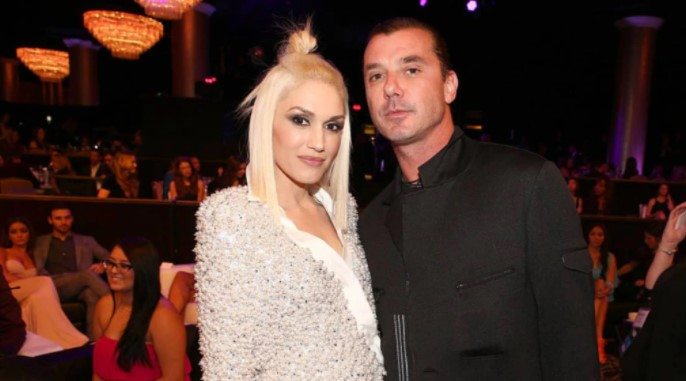

After Overcoming Infidelity, Gwen Stefani Found Love With Blake Shelton At The Age Of 50
Pop culture·4 min read
Society has a long history of prescribing how and when women should approach love.
Each time they wake up, they’re reminded of their biological clock. Women are made
to feel worthless if they are not romantically associated with a man. In society,
women are advised on the type of husband, lifestyle, and career they should pursue.
Damn, it’s brutal out here, as they say.
Even so, despite all the collective agonies and resentments, a few women defy the
judgment with their strength. Gwen Stefani would certainly qualify. In recent years,
she has cemented her legacy as one of the boldest, coolest women in pop culture by
pursuing love at 50.
On July 3, 2021, No Doubt’s frontwoman marries country singer Blake Shelton. In her
midlife milestone, we can learn the following:
After finding out about her
husband’s infidelity, Gwen
thought her “dreams were shattered”
Gwen Stefani met Gavin Rossdale in 1995 during a holiday concert for radio station KROQ with No Doubt and Bush. The couple married in 2002 at St. Paul’s Church, London, and welcomed three children: Kingston, Zuma, and Apollo. It had been a happy marriage, but it turned sour on Gavin’s end. It was 2015 when Gavin’s infidelities became public, including a three-year affair with the family nanny. Gavin allegedly had sex with his nanny after Apollo was born in 2014, whereas other papers claim he used to bring Mindy along on tour while his kids dazed off next to her while she had sex. There’s no way to prove the truth behind every sordid report, but there’s reliable proof Gavin cheated on his wife of thirteen years.

The marriage ended when Gavin’s affair with the nanny was confirmed – a classic
Hollywood scandal. For Gwen, the whole thing was a nasty, tacky embarrassment;
she shielded for cover as the mainstream media picked apart her husband and put
every aspect of her life under the microscope.
Gwen told a heartbreaking story about her ordeal in an interview with Glamour.
Hell was just getting started. She said she would have told everyone, but she
had to keep her mouth shut for the sake of her kids. During her rapidly imploding
marriage, the singer went back to work and quietly dealt with it.
It’s the most harrowing moment that shows your true strength. She did what she
always does in tough situations: she prayed. She couldn’t let Gavin’s disgusting
behavior consume her; she had to look out for her boys and stand up for herself.
Cheating is, unfortunately, one of the most mundane things in life. If you’ve made
it this far without encountering it in any form – as the aggressor or the victim – you’re
one of the lucky ones. It might seem like a simple thing, but it has lasting effects on
the people involved. If you’re a victim, it can wreak havoc on your self-esteem and confidence.
sometimes you get disillusioned about love, and you’ll find that it’s hard to put your faith in anyone and really rely on them to fulfill you in any way, shape, or form. Gwen’s not just brave for bearing the torture under the spotlight; she opened her heart to someone new in a matter of months. It worked out great
The beginning of Gwen and Blake’s relationship was fraught with trust issues
Gwen and Blake met on The Voice in November 2015. A close, co-working partnership ended up blossoming into a love story that changed both of their lives. Interestingly, both Gwen and Blake were going through the same thing at the same time, so they were able to connect over their heartaches without beating around the bush. In her story, Gwen describes how they both struggled with trust issues in the first few weeks, but they were able to get over them with empathy and communication. It was a “miracle” to find ove so soon after “months and months of torture.” Besides, dating in your late forties and fifties carries an unattractive stigma, as if women of a certain age are suddenly unattractive and thus unworthy of love. We either get the impression that they’re malicious cougars looking to relive their youth or sad, lonely women who just can’t seem to get any luck. Gwen and Blake’s relationship is proof that love doesn’t expire and it doesn’t matter how many bad breaks you’ve been through, as long as you’re in a position to find happiness. We shouldn’t be concerned about whether older women are desirable – they are, as long as they feel like it.
Love accepts everything
Pay no attention to what other people say – love doesn’t care about your age, your background, your job, your status, or anything else. People who have experienced love at its fullest understand you can find and keep love at any age. Just let it consume you on its own terms, and your heart will follow. In fact, our life experiences make us more capable of accepting and savoring love as we age. Considering Gwen overcome her traumas at 50 to build a future with Blake, you have nothing to stop you from finding your true love. Society is made of manufactured pressures, but love isn’t.